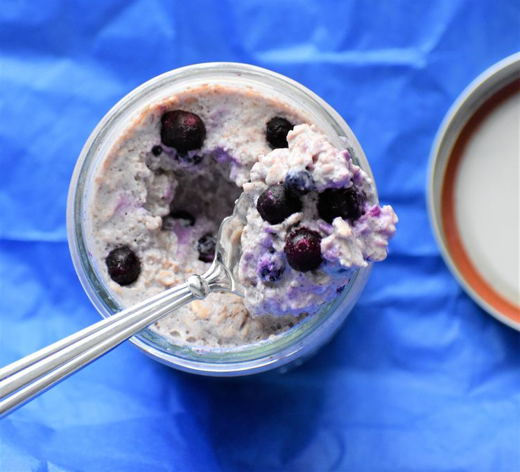

Home
Overnight Oats

Description
Blueberries, cinnamon, and Greek yogurt are great additions to overnight oats.
Ingredients
- ⅜ cup rolled oats
- ¼ cup blueberries
- ¼ cup plain Greek yogurt
- ⅛ cup soy milk
- ½ tablespoon ground cinnamon, or to taste
- 1 teaspoon sugar
Directions
- Combine rolled oats, blueberries, Greek yogurt, soy milk, cinnamon, and sugar in a lidded jar. Cover, shake to mix, and refrigerate 8 hours to overnight.